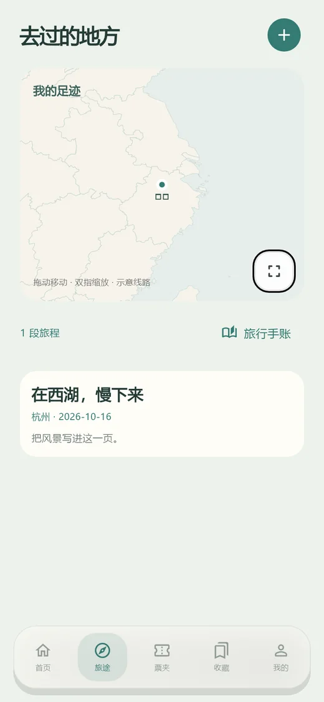

旅行日志
记下地点、照片和当时的心情，让地图慢慢亮起来。

The interface
旅行、票根、美食、影视、手账与天气，都在同一个地方。

首页 · 天气与记录入口
自动切换 · 悬停暂停 · 点击看大图
What you can keep
记下地点、照片和当时的心情，让地图慢慢亮起来。
机票、车票都能翻面保存，正面是行程，背面是故事。
一餐一味，连价格和地点一起收好，下次还能按图索骥。
留住散场后的感受，评分、导演、主演与观后感都能放进去。
把照片、文字和贴纸排成书页，翻起来像一本真正的旅行书。
和风天气数据，自动定位当前城市，只看当下这一眼。
Choose your platform
全部为最新稳定版 1.0.0。自动识别你的系统并标记推荐下载。
macOS 版为未签名测试包，首次打开请参考 Apple 官方说明；Linux 另提供便携 TAR.GZ。所有文件均可校验 SHA256。